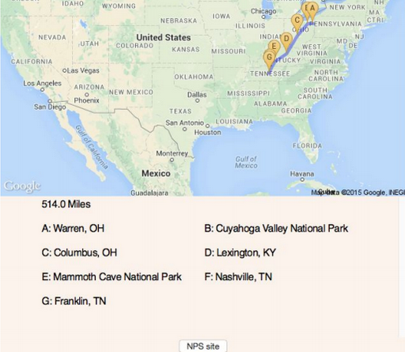

Projects
VirtualHarp
- I've always loved the harp, so it seemed natural to make a simple simulator.
- This was the first project that I ever completed. I coded it in C++ and used a 2D graphics engine.
- I collected the sound files from my harp.
- Download
CityHop

- I made this because I thought it would be cool to learn about potential stops to make on a long trip.
- To make this work, I populated a PostgreSQL database with major cities and destinations like national parks using latitude and longitude coordinates.
- I used the Haversine formula to calculate great arc length.
- I used the Google Maps Geocoding API and a static map of the contiguous United States.
- This was coded in Python.
- This was designed to be used in conjunction with driving directions; this provides inspiration but not step-by-step directions.
- I would like to make this into an app ultimately.
- Link to Repo
- Download Senior Seminar Presentation
CruiseControlPlus (In Progress)
- I'm fascinated with the idea of driver-less cars. We currently have toll scanners that can accurately read license plate numbers and we have cruise control. What if cars had scanners that could integrate with cruise control to keep a safe following distance?
- This project is in the early stages and is like a simple simulator. For the first version, controls are relatively static. The weather conditions are presumed to be fair, the roads are flat, and speeds are constant and unchanging.
- In later versions, I would like the conditions to be more variable. What if the weather changes mid-drive? What if the driver in front initially is going slower than you, but then speeds up? I'm interested in seeing how realistic I can make the conditions in further iterations.
- Link to Repo